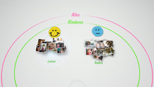
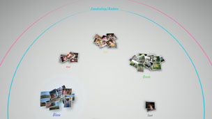

Foto's organiseren
Foto's groeperen
U kunt gebeurtenissen selecteren en vervolgens foto's groeperen binnen die geselecteerde gebeurtenissen met behulp van een van de hieronder beschreven opties. Selecteer de gebeurtenissen die de foto's bevatten die u wilt groeperen. Druk op de  -toets en selecteer vervolgens
-toets en selecteer vervolgens  (Groeperen). Als u het aantal gegroepeerde foto's wilt verkleinen, selecteert u een groep of groepen die de foto's bevatten die u wilt groeperen en gebruikt u vervolgens een andere optie onder (Groeperen) om de foto's te groeperen.
(Groeperen). Als u het aantal gegroepeerde foto's wilt verkleinen, selecteert u een groep of groepen die de foto's bevatten die u wilt groeperen en gebruikt u vervolgens een andere optie onder (Groeperen) om de foto's te groeperen.
| Datum/tijd | Groeperen op basis van de datum en de tijd waarop de foto's werden gemaakt. |
|---|---|
| Aantal personen | Groeperen op basis van het aantal personen op de foto's. |
| Leeftijdsgroep | Groeperen op basis van de relatieve leeftijd van de personen op de foto's. |
| Uitdrukking | Groeperen op basis van de gelaatsuitdrukking van de personen op de foto's. |
| Kleur | Groeperen op basis van de kleuren op de foto's. |
| Cameratype | Groeperen op basis van het cameramodel dat werd gebruikt om de foto's te maken. |
| Game | Groeperen per gamenaam. |
| Album | Groeperen op basis van albums die werden aangemaakt onder  (Foto) in het XMB™-scherm. (Foto) in het XMB™-scherm. |
Opmerkingen
- Met [Select Alles] worden alle foto's in [Gebied bibliotheek] gegroepeerd op basis van de door u gekozen optie.
- De groepering gebeurt op basis van een analyse van de foto's; in sommige gevallen beantwoorden de resultaten mogelijk niet aan uw verwachtingen.
- U kunt een afspeellijst van de gegroepeerde foto's aanmaken.
Voorbeelden van gegroepeerde foto's: foto's van lachende kinderen
1. |
Groepeer foto's door |
|---|---|
2. |
Selecteer de gelabelde groep [Kinderen] en druk op de |
3. |
Selecteer  |
Voorbeelden van gegroepeerde foto's: foto's die de blauwe hemel tonen
1. |
Groepeer foto's door |
|---|---|
2. |
Selecteer de gelabelde groep [Landschap/Andere] en druk op de |
3. |
Selecteer  |
Foto's verwijderen
Om een foto of album te verwijderen, selecteert u de foto of het album, drukt u op de -toets en selecteert u  (Verwijderen).
(Verwijderen).
Opmerking
Als u foto's verwijderd in [Gebied bibliotheek], worden de foto's ook verwijderd uit de systeemopslag van het PS3™-systeem.